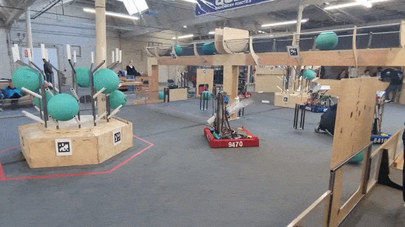
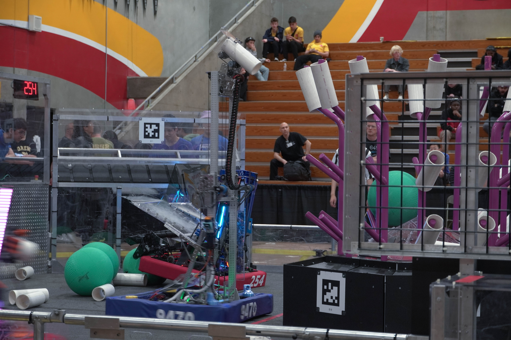

FRC 9470 REEFSCAPE
2025 season · Two robot iterations
REEFSCAPE challenged teams to collect and score coral on a reef while moving algae to designated zones. Our robots focused on scoring across all reef levels with an elevator-mounted end effector, while also removing algae to create scoring opportunities for alliance partners.
Robot 1 · Pinnacles Regional
I led the robot layout and focused on the end effector, elevator, and drivetrain. WCP Swerve X2T modules helped preserve internal space for electronics and mechanisms. A belt-driven funnel guided coral into a horizontal roller end effector mounted on a two-stage cascade elevator, allowing the robot to reach all reef levels quickly.
The robot ranked 15th, became the first pick of Alliance 3, advanced to the quarterfinals, and won the Autonomous Award. The event established a strong baseline for the next iteration.
Robot 2 · East Bay Regional
I helped refine the end effector into a much lighter mechanism using bottom rollers and a single motor, reducing its weight to just over two pounds. The elevator was moved more towards the front of the robot, in order to move the end effector closer to the scoring area. A gravity-fed funnel with 3D-printed TPU star wheels improved coral alignment, feeding reliability, and intake area while removing the need for a powered funnel.
This robot ranked 16th and joined Alliance 6, reaching round 3 of playoffs.
Overall, this robot was a lighter, faster, and more optimized version of its predecessor, our Pinnacles robot and this time we were not 4 pounds overweight on load in day!
OPEN PROJECT PDF ↗

